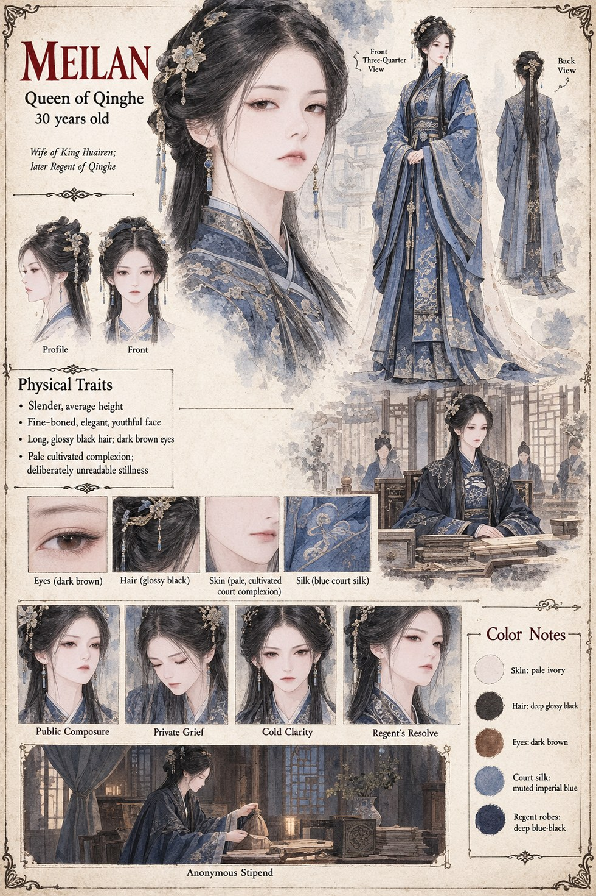

Meilan
Queen of Qinghe · 30 years old · later Regent
Queen of Qinghe for nine years before the novel opens, and the one person in Jinlu who understands exactly what the Father's Reckoning is worth: it makes Prince Jiyun her husband Huairen's legal son the moment Warden Peizhi records it, whatever the truth of his conception with Huaiyu happens to be. She spends the entire novel protecting that single piece of paper, by whatever quiet, unglamorous means the household affords a woman who cannot be seen to act at all.
When Suyin's accidental knowledge threatens to undo it, Meilan has Chunhui gently questioned rather than raise her own voice once, and the household's quieter instruments — Cao's, Chancellor Jian's — do the rest without her ever giving a documented order. She rules as Regent once the throne is hers to hold, outlives every man who did the actual killing on her behalf, and marks the one debt she can never openly repay by quietly doubling, every season, an anonymous stipend to a dead maid's brother who has no idea whose money it is.
“I chose, the only way I could: by declining to choose otherwise.”
Appears in The Listening Water